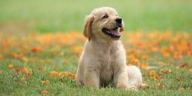
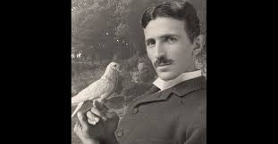

Dogs
Dogs are the best and they come in all shapes and sizes. They literally help us with everything in some cases more than others. I mean there are dogs that are for people who cannot see. We have d
ogs for airport security. Matter of fact we currently have dogs that are used to sniff out traces of people with corona virus. They are kind, compassionate, loyal and genuine. They can even understand basic speech and I think any defects they have can be overlooked by their amazing qualities

Pigeons
pigeons make excellent pets for a variety of reasons:
- -They are attractive
- -They are quiet and unobtrusive, with a calming, gentle voice
- -They are easy to tame
- -They are generally healthy and very hardy
- -They are active but not overly demanding
- -They require very little maintenance
- -They are usually inexpensive.
- -They are easy to breed and make excellent parents.
These are simply some of the few reasons why I love pigeons. I personally have cared for many pigeons and have found comfort in thire soft coos. While people are harsh and treasonous and have hearts filled to the brim with hate, jealousy and contempt for anyone why goes against them. Pigeons are pure in heart and never have and never will be vile to me. They have always accepted me and my gifts to them and have been content. Never asking more of me. I will always be indebted to their acceptance. I have been betrayed many times but never by pigeons.
